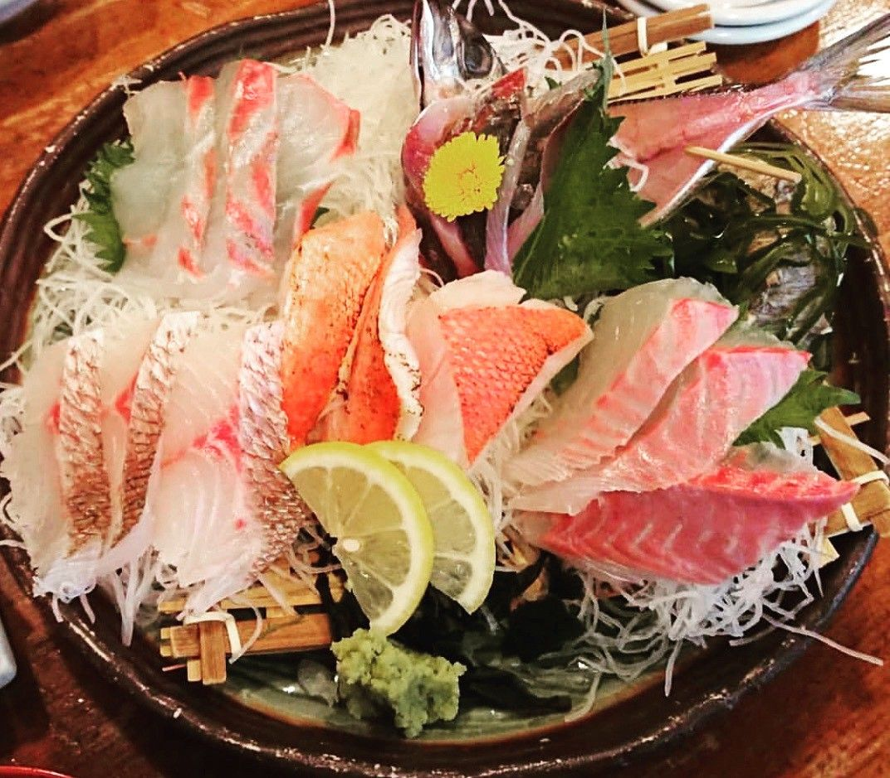
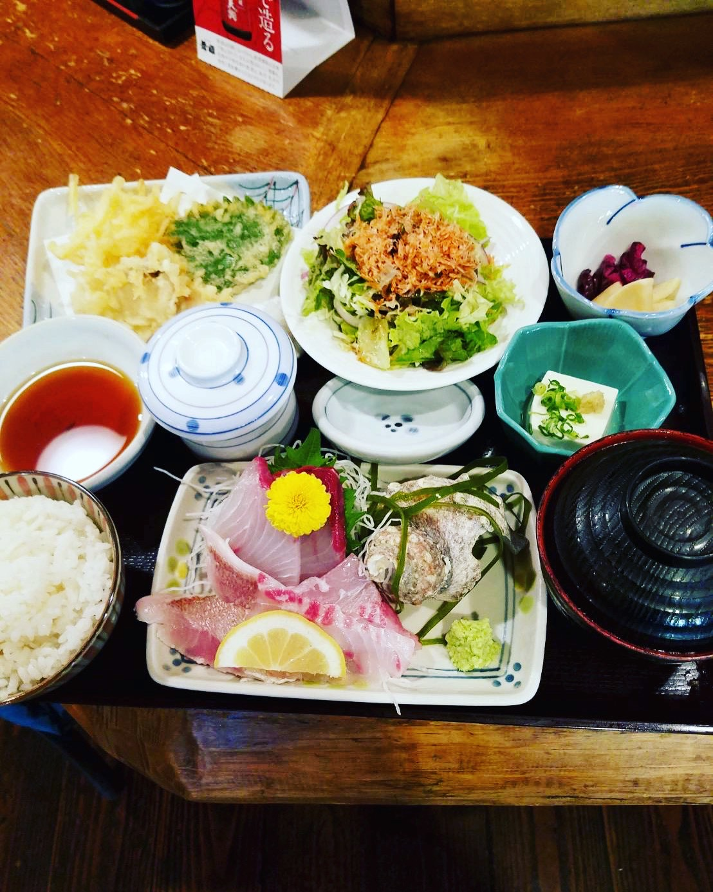
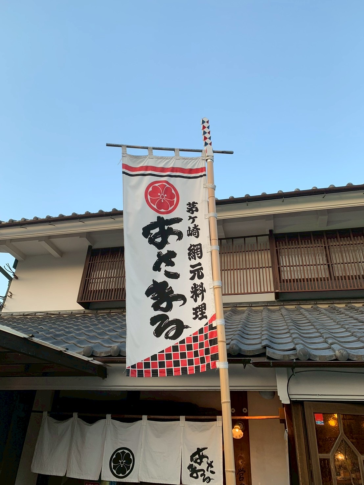

昼 11:30–15:00 L.O. 14:30
夜 17:00–22:00 L.O. 20:30
火曜定休 月曜夜は不定休
営業のご案内
- 昼
- 11:30–15:00 L.O. 14:30
- 夜
- 17:00–22:00 L.O. 20:30
- 定休日
- 火曜 月曜夜は不定休
- 駐車場
- あり

ご予約
ご予約はお電話にて承ります。
0467-88-3751
お席のみ・コースなし
2ヶ月前から受付／限定5組

スタッフ募集
ホール・洗い場（アルバイト）
板前（社員）
ご応募から7日以内に、ご記入のメールアドレスあてにご連絡します。7日を過ぎても連絡がない場合は、0467-88-3751までお問い合わせください。